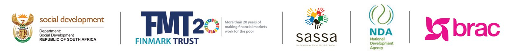

01Data & Analytics
See financial markets more clearly.
Explore FinScope Consumer and MSME evidence, bespoke analytics and practical training that turn complex data into better decisions.
01Data & Analytics
Explore FinScope Consumer and MSME evidence, bespoke analytics and practical training that turn complex data into better decisions.
Latest evidence
Rethinking monitoring and evaluation in an age of community distrust—and designing stronger feedback loops.
Read the insightA decade of progress and the priorities shaping digital public infrastructure and financial health.
View publicationWhy better gender data matters for women’s economic empowerment.
Read articleFinScope evidence and practical lessons from South Africa’s digital tipping pilots.
Watch videoLessons on practical learning, trusted support and meaningful financial behaviour change.
Read the articleProgramme platforms
Discover and explore other useful FinMark Trust landing pages and resources.
Dialogue, learning and action across financial inclusion stakeholders in the region.
Visit landing page Livelihoods programmeGenerating Better LivelihoodsSupporting grant recipients into employment and sustainable enterprise pathways.
Visit landing page Cross-cutting themeGenderGender-disaggregated evidence and action for women’s economic empowerment.
Visit landing page Community programmeCommunity DigitalisationExpanding safer digital payments and opportunity in Thembisa and Hammanskraal.
Visit landing page Data & Analytics serviceTrainingBuilding the practical capacity to understand and apply financial inclusion evidence.
Visit landing page Regional infrastructureeKYC & Digital IdentityAdvancing a lower-friction, interoperable identity ecosystem across SADC.
Visit landing pageOne connected platform
FinMark Trust’s evidence is organised around the ways people use it: to explore data, understand an issue or see what works in practice.
Find surveys, explore indicators and download evidence for each country.
Explore Data & AnalyticsFollow programme outcomes, research themes, partners and learning in one place.
Explore programmesData spotlight
Every SADC country has its own data page, with its FinScope surveys, key statistics and the research and programmes behind them.
Programme spotlight
GBLGenerating Better Livelihoods for Grant Recipients
Generating Better Livelihoods for Grant Recipients (GBL) is a national pilot that supports Child Support Grant recipients into skills development, entrepreneurship and employment pathways.

About FinMark Trust
FinMark Trust is an independent non-profit trust that uses data, research, policy support and market facilitation to advance inclusive financial systems and improve livelihoods across the SADC region.